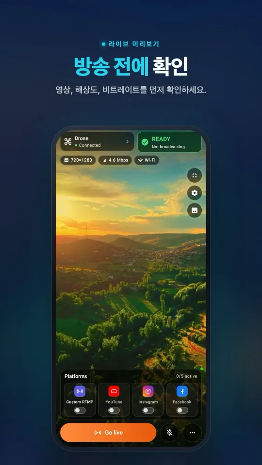
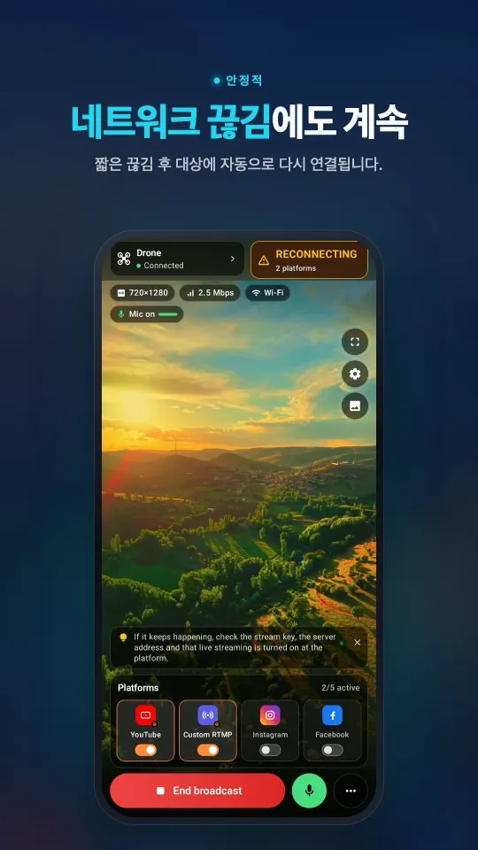
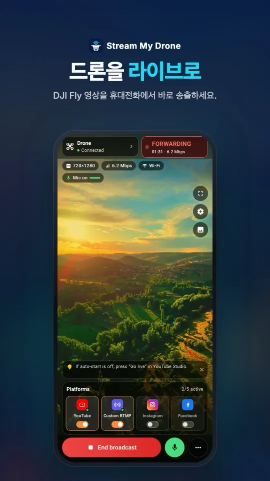
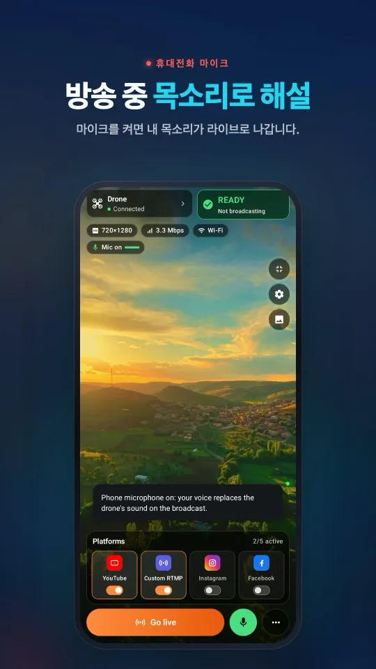
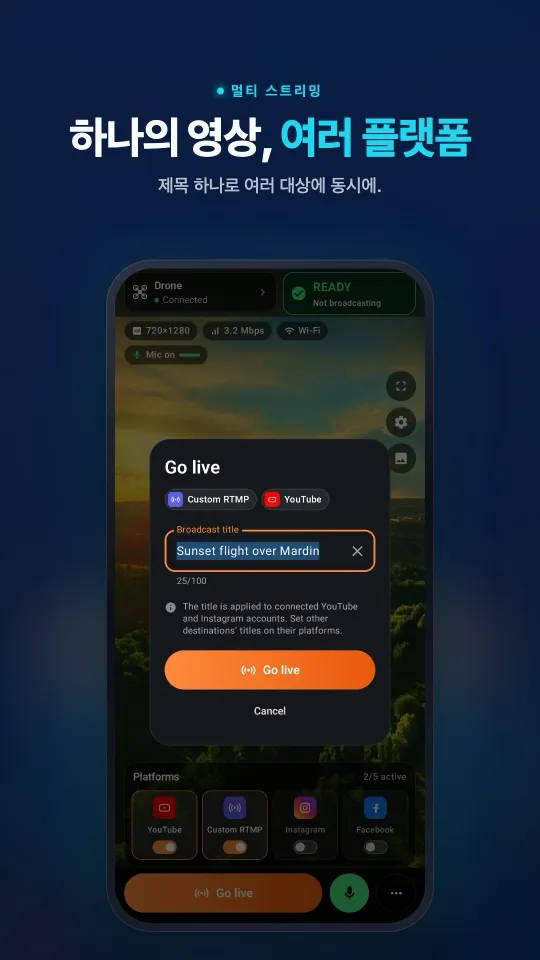

DJI Fly “Livestream error”: 원인과 원인별 해결 방법
DJI Fly에 “Livestream error”나 “Starting livestream failed”가 표시되면 원인은 거의 항상 네 가지 중 하나입니다. 플랫폼이 RTMPS를 요구하거나(Instagram, Facebook), 주소나 스트림 키가 틀렸거나, 계정이 아직 라이브를 할 수 없거나, 조종기가 서버에 닿지 못하는 경우입니다. 가장 빠른 확인 방법은 먼저 같은 Wi-Fi의 휴대폰이나 컴퓨터에서 Stream My Drone으로 보내 보는 것입니다. 화면이 들어오면 DJI Fly는 정상이고 문제는 플랫폼 쪽에 있습니다.
RC 2에서 DJI Fly가 마이크를 요구하며 방송을 시작하지 않나요? 마이크 없이 해결하기 →
요약
- DJI Fly는 암호화되지 않은 RTMP만 보냅니다. Instagram과 Facebook은 RTMPS만 받으므로 직접 방송은 실패하며, DJI 지원팀도 포럼에서 이를 확인했습니다.
- RTMP 주소는 서버 URL, “/”, 스트림 키를 공백 없이 이은 것입니다. 슬래시 누락이나 예전 키가 YouTube에서 가장 흔한 실패 원인입니다.
- 계정이 라이브 권한을 가져야 합니다. 새 YouTube 채널은 라이브를 켠 뒤 최대 24시간이 걸리고, TikTok은 일부 계정에만 스트림 키를 줍니다.
- 1세대 DJI RC는 라이브 방송을 지원하지 않습니다. RC 2, RC Pro, DJI 스마트 컨트롤러는 DJI Fly 1.16.0부터 마이크가 필요합니다.
- 시작했다가 끊기는 방송은 네트워크 문제입니다. 약한 모바일 신호, 게스트 Wi-Fi, 2.4 GHz와 5 GHz를 오가는 공유기가 원인입니다.
6가지 점검으로 DJI Fly 라이브 오류 해결하기
- 주소 형식 확인DJI Fly에는 서버 URL, 슬래시, 스트림 키를 공백 없이 한 줄로 넣습니다. YouTube는
rtmp://a.rtmp.youtube.com/live2/뒤에 키를 붙입니다. 키를 다시 복사하세요. 예전 키나 재설정한 키는 별다른 안내 없이 실패합니다. - 플랫폼이 RTMP를 받는지 확인YouTube, Twitch, Kick은 RTMP를 받습니다. Instagram과 Facebook은 DJI Fly가 보낼 수 없는 암호화된 RTMPS가 필수라서 직접 방송은 항상 실패합니다. RTMPS로 전달하는 수신 앱으로 DJI Fly를 보내세요.
- 계정이 라이브를 할 수 있는지 확인YouTube에서는 YouTube 스튜디오에서 라이브 스트리밍을 켜고 기다리세요(처음에는 최대 24시간). DJI에 따르면 라이브 권한이 없으면 플랫폼이 유효한 키를 주지 않습니다.
- 조종기 확인1세대 DJI RC는 라이브 방송을 지원하지 않습니다. DJI RC 2, RC Pro, DJI 스마트 컨트롤러에서는 DJI Fly 1.16.0 이상이 방송 시작 전에 마이크 연결을 요구합니다.
- 연결 확인직접 방송이라면 조종기나 휴대폰이 인터넷(4G/5G 또는 Wi-Fi)에 연결돼 있어야 합니다. 로컬 수신이라면 두 기기가 게스트 Wi-Fi가 아닌 같은 네트워크에 있어야 합니다.
- 로컬 수신으로 테스트DJI Fly의 대상을 휴대폰이나 컴퓨터의 Stream My Drone(
rtmp://<앱에 표시된 주소>:1935/drone)으로 지정하세요. 화면이 나오면 DJI Fly는 정상이고 남은 문제는 플랫폼, 키, 계정입니다.
오류, 원인, 해결 한눈에 보기
| 증상 | 가능한 원인 | 해결 |
|---|---|---|
rtmps:// 주소로 바로 실패 또는 “invalid RTMP URL” | DJI Fly는 RTMP만 보냄 | RTMPS를 지원하는 수신 앱을 거쳐 전달 |
| YouTube에서 바로 실패 | 잘못된 키, “/” 누락, 주소의 공백 | URL과 키를 다시 복사해 “/”로 연결 |
| 새 YouTube 채널에서 실패 | 라이브 스트리밍이 아직 꺼져 있음 | YouTube 스튜디오에서 켜고 최대 24시간 대기 |
| Instagram에서 한 번 되고 다음엔 안 됨 | Instagram 키는 일회용이고 RTMPS 필수 | 방송마다 새 키, RTMPS로 전달 |
| “No built-in mic in current device” | DJI Fly 1.16+의 RC 2, RC Pro, 스마트 컨트롤러 | 마이크 연결 또는 가상 블루투스 마이크 사용 |
| 메뉴에 RTMP가 없음 | 1세대 DJI RC 또는 1.4.12보다 오래된 DJI Fly | 지원되는 조종기 사용, DJI Fly 업데이트 |
| 시작 후 몇 초 만에 끊김 | 약한 업로드, 게스트 Wi-Fi, 대역 전환 | 5 GHz나 휴대폰 핫스팟 사용, 가까이 이동 |
| 카운트다운 후 플랫폼에 아무것도 없음 | 라이브 시작을 누르지 않음(Instagram, Facebook) 또는 잘못된 키 | 플랫폼에서 라이브 시작을 누르고 키 확인 |
휴대폰에서 보는 모습DJI Fly 연결부터 여러 플랫폼 동시 방송까지 한 화면에서.




로컬 테스트가 가장 빨리 원인을 찾는 이유
DJI Fly 방송은 조종기, 네트워크, 플랫폼 세 단계를 거칩니다. 로컬 수신은 문제를 절반으로 나눕니다. Stream My Drone은 DJI Fly에 입력할 RTMP 주소를 보여 주고, Start Livestream을 누르고 몇 초 뒤 해상도와 비트레이트와 함께 화면을 보여 줍니다.
- 화면이 들어옴: DJI Fly, 조종기, 로컬 네트워크는 정상입니다. 앱에 플랫폼을 추가하면 RTMPS, 매번 바뀌는 Instagram 키, 자동 재연결은 앱이 처리합니다.
- 아무것도 안 들어옴: 조종기가 수신 기기에 닿지 못합니다. 같은 Wi-Fi나 핫스팟에 있는지, 주소가
:1935/drone까지 정확히 같은지 확인하세요. - 화면이 들어오다가 몇 초마다 끊김: Wi-Fi 문제입니다. 2.4 GHz와 5 GHz에 같은 이름을 쓰는 공유기는 계속 대역을 바꿉니다. 휴대폰 핫스팟은 그렇지 않습니다.
메뉴 단계별 안내: DJI Fly RTMP 설정. Instagram: DJI Fly가 Instagram으로 방송할 수 없는 이유.
방송이 720p뿐이거나 비트레이트가 안 바뀌는 이유
오류가 아니라 제한입니다. DJI에 따르면 DJI RC 2와 DJI RC Pro 2는 하드웨어 때문에 720p만 방송하고, DJI RC Pro는 DJI Fly 1.18.0 이후 720p만 방송합니다. RC-N1, RC-N2, RC-N3에 휴대폰을 연결하면 1080p나 720p를 고를 수 있습니다. 비트레이트는 영상 전송 프레임 레이트로 정해지며 Android는 5 또는 3 Mbps, iOS는 2 또는 1 Mbps이고 직접 바꿀 수 없습니다.
소리가 안 나거나 지직거릴 때
- 무음 방송: DJI Fly는 조종기나 휴대폰의 마이크 소리를 보냅니다. 마이크가 없는 조종기나 가상 마이크는 무음을 보냅니다.
- 지직거리거나 찌그러진 소리: 다른 마이크나 다른 USB-C 포트를 써 보세요. 계속되면 DJI Fly의 소리를 바꾸세요. Stream My Drone의 휴대폰 마이크 버튼을 켜면 모든 플랫폼에 내 목소리가 대신 나갑니다.
출처
주소 형식, 계정 권한, 마이크, 해상도, 비트레이트: DJI Fly App Livestream Operation Guides. RTMPS와 Facebook: DJI 포럼: Facebook 라이브 문제, YouTube나 Facebook 라이브 오류. “Starting livestream failed”: DJI Mobile SDK 이슈 1120. 2026년 11월 8일 확인.
관련 글: RC 2 마이크 문제 해결, 라이브 방송이 되는 DJI 드론, 드론 라이브 방송 전체 가이드.
자주 묻는 질문
DJI Fly에 “Livestream error”가 뜨는 이유는?
대부분 플랫폼이 RTMPS를 요구하거나(Instagram, Facebook), 주소나 키가 틀렸거나, 계정이 아직 라이브를 할 수 없거나, 조종기가 서버에 연결되지 않았기 때문입니다. 먼저 로컬 수신으로 어느 쪽이 실패하는지 확인하세요.
DJI Fly에서 Facebook이나 Instagram으로 바로 방송할 수 있나요?
아니요. 둘 다 암호화된 RTMPS만 받는데 DJI Fly는 암호화되지 않은 RTMP를 보냅니다. DJI Fly 방송을 휴대폰이나 컴퓨터의 Stream My Drone으로 보내면 RTMPS로 전달합니다.
DJI Fly에 넣을 YouTube RTMP 주소는?
rtmp://a.rtmp.youtube.com/live2/ 뒤에 YouTube 스튜디오의 스트림 키를 공백 없이 붙입니다. DJI 가이드는 서버 주소와 키를 슬래시로 연결합니다.
DJI 드론 라이브가 몇 초 만에 끊기는 이유는?
보통 네트워크 때문입니다. 약한 모바일 신호, 게스트 Wi-Fi, 2.4 GHz와 5 GHz를 계속 오가는 공유기가 원인입니다. 휴대폰 핫스팟이나 5 GHz Wi-Fi를 쓰고 기기를 가까이 두세요.
1세대 DJI RC로 라이브 방송을 할 수 있나요?
아니요. DJI는 DJI RC에서 라이브 방송을 지원하지 않는다고 밝혔습니다. 휴대폰을 쓰는 RC-N1, RC-N2, RC-N3와 DJI RC 2, RC Pro, RC Pro 2, 스마트 컨트롤러에서 지원됩니다.
DJI Fly에서 라이브 비트레이트를 올릴 수 있나요?
아니요. DJI가 전송 프레임 레이트에 맞춰 고정합니다. Android는 5 또는 3 Mbps, iOS는 2 또는 1 Mbps입니다. 또한 RC 2와 RC Pro 2는 720p만 방송합니다.
휴대폰으로 드론을 라이브 방송하세요
Android·iPhone용 Stream My Drone은 DJI Fly 화면을 받아 YouTube, Instagram, Facebook, TikTok, Twitch, Kick 또는 직접 운영하는 서버로 여러 곳에 동시에 보냅니다. 한 번 구매, 구독 없음.

다른 가이드
드론으로 라이브 방송하는 방법 (5단계, 2026)
드론으로 YouTube, Instagram, TikTok, Facebook에 라이브 방송하는 방법: 준비물, 4가지 방법, DJI Fly RTMP 설정 5단계, 필요한 인터넷 속도와 문제 해결까지 정리했습니다.
라이브 방송이 되는 DJI 드론은? 전체 기종과 조종기 목록
DJI Fly에서 라이브 방송이 되는 모든 DJI 드론을 Mini 2와 Mini 4K부터 Mavic 4 Pro와 Avata 360까지 정리했습니다. 쓸 수 있는 조종기와 720p, 마이크 제한도 함께 확인하세요.
드론으로 결혼식 라이브 방송하는 방법
오지 못하는 하객을 위해 DJI 드론으로 결혼식을 생중계하세요. 계획, 장비 목록, 비공개 YouTube 링크, 휴대폰이나 노트북 설정, 꼭 지켜야 할 안전 수칙을 정리했습니다. DJI RC 2라면 컴퓨터 없이도 됩니다.
DJI RC 2가 마이크 없이 라이브 방송이 안 되나요? “No built-in mic in current device” 해결법
DJI Fly 1.16은 마이크 없이 RC 2 라이브 방송을 시작하지 않습니다. 원인, 효과 있는 방법(USB-C 마이크, AirPods), Android 휴대폰으로 장비 없이 해결하는 방법.
DJI Flip으로 라이브 방송하는 방법
RC 2, RC-N3, RC-N2로 DJI Flip을 라이브 방송하는 방법. 휴대폰과 컴퓨터 RTMP 설정, 손바닥·휴대폰 조종과의 차이, 세로 화면 구성, 플랫폼 점검을 정리했습니다.
DJI Lito X1으로 라이브 방송하는 방법
RC 2, RC-N3, RC-N2로 DJI Lito X1을 라이브 방송하는 방법. DJI Fly RTMP 설정, 휴대폰·컴퓨터 방송 방법, 플랫폼 설정과 실전 문제 해결을 정리했습니다.
DJI Lito 1로 라이브 방송하는 방법
RC 2, RC-N3, RC-N2로 DJI Lito 1을 라이브 방송하는 방법. DJI Fly RTMP 설정부터 휴대폰·컴퓨터 방송, 플랫폼 설정, 문제 해결까지 한 번에 정리했습니다.
DJI Air 3S로 라이브 방송하는 방법
DJI Air 3S로 YouTube, Instagram, Facebook에 라이브 방송하는 방법. 조종기를 고르고, DJI Fly RTMP를 휴대폰이나 컴퓨터에 연결하고, 송출 화면을 확인하세요.
DJI Air 3로 라이브 방송하는 방법
DJI Air 3로 YouTube, Instagram, Facebook에 생중계하는 방법. 조종기를 고르고, DJI Fly RTMP를 휴대폰이나 컴퓨터에 연결한 뒤 송출 화면을 확인하세요.
DJI Mavic 4 Pro로 라이브 방송하는 방법
RC 2나 RC Pro 2로 DJI Mavic 4 Pro 영상을 휴대폰이나 컴퓨터로 방송하는 방법. DJI Fly RTMP, 마이크 차이, 720p 제한, 플랫폼 설정을 확인하세요.
DJI Mavic 3, Classic, Pro로 라이브 방송하는 방법
RC-N1이나 RC Pro로 DJI Mavic 3, Classic, Pro를 라이브 방송하는 방법. DJI RC로는 방송할 수 없는 이유, 휴대폰 수신, 데스크톱 RTMP, 화질 제한을 정리했습니다.
DJI Mini 3 Pro로 라이브 방송하는 방법
RC-N1, 휴대폰의 DJI Fly, 컴퓨터의 Stream My Drone으로 DJI Mini 3 Pro를 라이브 방송하는 방법. 초기 DJI RC로는 이 RTMP 방식을 쓸 수 없는 이유도 알아보세요.
DJI Mini 3로 라이브 방송하는 방법
RC-N1과 DJI Fly로 DJI Mini 3 영상을 컴퓨터의 Stream My Drone에 보내 생중계하는 방법. DJI RC 제한, 720p 라이브 뷰 화질, 플랫폼 송출을 확인하세요.
DJI Mini 5 Pro로 라이브 방송하는 방법
RC 2나 RC-N3로 DJI Mini 5 Pro를 라이브 방송하는 방법. DJI Fly RTMP를 설정하고 휴대폰이나 컴퓨터로 드론 영상을 YouTube, Instagram, Facebook에 보내세요.
DJI Mini 4 Pro로 라이브 방송하는 방법
RC 2나 RC-N2로 DJI Mini 4 Pro를 라이브 방송하는 방법. 휴대폰·컴퓨터 설정, DJI Fly RTMP 설정, 마이크 요구 사항, 플랫폼 확인까지 따라 해 보세요.
DJI 드론으로 동물을 실시간으로 찾고 세기
Stream My Drone이 드론 라이브 화면에서 염소, 양, 소, 말, 당나귀, 가금류를 찾아 방송에 표시하고 수를 셉니다. 모든 처리는 내 컴퓨터에서 이루어집니다.
DJI Fly RTMP 라이브 방송: 전체 설정 방법
DJI Fly에서 RTMP 라이브 방송을 설정하는 방법. 설정 위치, 입력할 주소, 조종기와 컴퓨터의 네트워크 연결, 문제 해결 방법까지 정리했습니다.
DJI Fly로 Instagram 라이브 방송이 안 되는 이유(와 해결책)
DJI Fly에는 Instagram 옵션이 없고, RTMP 클라이언트는 Instagram이 요구하는 암호화된 RTMPS를 지원하지 않습니다. 그 이유와 DJI 드론으로 Instagram 라이브를 하는 방법을 알려 드립니다.
DJI 드론을 컴퓨터 웹캠으로 바꾸기
Stream My Drone 가상 카메라로 DJI 드론을 TikTok LIVE Studio, OBS, Zoom, Google Meet, Teams용 웹캠으로 바꾸세요. 설정 방법, 활용 아이디어, 문제 해결까지.
DJI Neo로 라이브 방송하는 방법
DJI Neo로 라이브 방송하는 방법. 어떤 조종 방식(휴대폰, RC-N3, 고글)이 되는지, DJI Fly RTMP 설정, Stream My Drone으로 Instagram·TikTok·YouTube에 방송하는 법을 알려 드립니다.
DJI Avata 2로 라이브 방송하는 방법
DJI Avata 2의 FPV 영상을 라이브 방송하는 방법. Goggles 3 화면을 휴대폰의 DJI Fly로 공유하고 RTMP로 송출해 Instagram, TikTok, YouTube에 방송하세요.
DJI Osmo 카메라로 Instagram, TikTok 등에 라이브 방송하기
DJI Mimo는 Osmo Action, Osmo Pocket, Osmo 360 카메라를 RTMP로 송출할 수 있습니다. 이를 Stream My Drone으로 보내 Instagram, TikTok, YouTube에 동시에 방송하세요.
Osmo Pocket 3로 Instagram과 TikTok에 라이브 방송하는 방법
Stream My Drone으로 DJI Osmo Pocket 3를 DJI Mimo의 RTMP로 Instagram, TikTok, YouTube에 동시에 라이브 방송하고, 무선 웹캠으로 쓰는 방법을 알려 드립니다.
Osmo Action 카메라로 Instagram과 TikTok에 라이브 방송하는 방법
Stream My Drone으로 DJI Osmo Action 6, 5 Pro, 4, 3을 DJI Mimo의 RTMP로 Instagram, TikTok, YouTube, Twitch에 동시에 라이브 방송하세요. 설정 방법과 추천 설정.
DJI 드론으로 TikTok 라이브 방송하는 방법
DJI Fly로 DJI 드론을 TikTok에 생중계하는 방법. TikTok 스트림 키로 하거나, 키 없이 TikTok LIVE Studio와 가상 카메라로 하세요. 설정과 문제 해결까지.
DJI 드론으로 Instagram 라이브 방송하는 방법
DJI 드론으로 Instagram 라이브하기: instagram.com에서 스트림 URL과 키를 받고, DJI Fly의 RTMP 스트림을 Stream My Drone으로 보낸 뒤 방송 시작(Go live)을 누르세요.
DJI 드론으로 YouTube 라이브 방송하는 방법
DJI 드론을 YouTube로 생중계하기: 라이브 스트리밍을 활성화하고, YouTube 스튜디오에서 스트림 키를 복사해 DJI Fly의 RTMP를 Stream My Drone으로 보내세요. 설정과 팁.
DJI 드론으로 Facebook 라이브 방송하는 방법
DJI 드론을 Facebook으로 생중계하기: Live Producer에서 RTMPS 서버 URL과 스트림 키를 받고, DJI Fly의 스트림을 Stream My Drone으로 보내 방송을 시작하세요.
DJI 드론으로 Twitch 방송하는 방법
DJI 드론을 Twitch로 생중계하기: 크리에이터 대시보드에서 스트림 키를 복사하고, Stream My Drone에 Twitch를 사용자 지정 RTMP 대상으로 추가해 방송하세요.
DJI 드론으로 Kick 방송하는 방법
DJI 드론을 Kick으로 생중계하기: Kick 대시보드에서 스트림 URL과 키를 복사해 Stream My Drone에 사용자 지정 RTMP 대상으로 추가하고 방송을 시작하세요.
DJI 드론 영상을 여러 플랫폼에 동시에 방송하기
Stream My Drone으로 DJI 드론 라이브 방송 하나를 TikTok, Instagram, YouTube, Facebook, Twitch, Kick에 동시에 보내세요. 무료이며 로컬에서 처리하고 재송출 서비스가 필요 없습니다.
Stream My Drone vs Restream: 내 드론에는 무엇이 맞을까?
DJI 드론을 여러 플랫폼에 방송할 때 Restream의 클라우드 중계와 내 컴퓨터의 Stream My Drone 중 무엇이 나을까요? 비용, 워터마크, Instagram, 세로 영상, 상황별 추천을 비교합니다.
NGINX와 OBS 설정 없이 DJI 드론 방송하기
DJI Fly 영상을 OBS로 가져오는 일반적인 방법은 NGINX RTMP 서버, 설정 파일, 미디어 소스입니다. 그 과정에 무엇이 필요한지, 그리고 앱 하나로 건너뛰는 방법을 알려 드립니다.